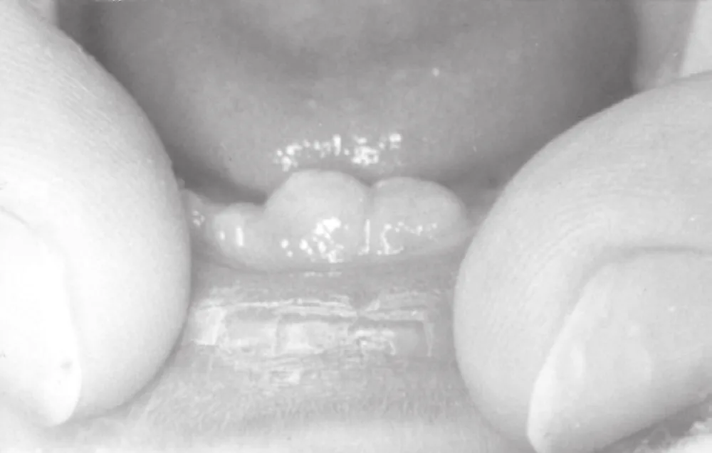
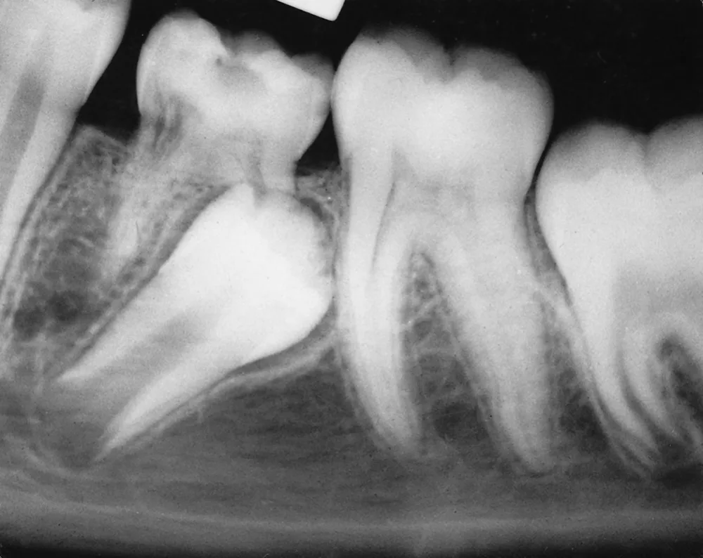

نسخه استخراجشده؛ ترجمه یا تأیید علمی انجام نشده است. وضعیت: captured
نشانههای واقعی: بیقراری، آبریزش دهان، تحریک و تورم موضعی لثه، تمایل به گاز گرفتن، و حداکثر افزایش خفیف دمای بدن.
آنچه هرگز نباید به دنداندرآوردن نسبت داد:تب بالا، اسهال، استفراغ و تشنج. اینها نشانهی بیماریاند و نسبت دادنشان به دندان میتواند تشخیص یک عفونت جدی را به تعویق بیندازد.
مدیریت ایمن:
حلقهی دندانگیر خنک، نه یخزده — سطح یخزده میتواند به لثه آسیب بزند.
ماساژ ملایم لثه با انگشت تمیز یا گاز مرطوب.
دو خطری که باید صریح هشدار بدهی:
ژلهای بیحسی حاوی بنزوکائین در کودکان زیر ۲ سال — خطر متهموگلوبینمی.
گردنبندهای کهربا — خطر خفگی و بند آمدن نفس، بدون هیچ اثر اثباتشدهای.
دندان نوزادی و نئوناتال: دندانی که هنگام تولد وجود دارد یا در ۳۰ روز اول میروید. معمولاً ثنایای پایین و در بیشتر موارد جزو همان بیست دندان شیری است، نه دندان اضافه — پس پیش از هر تصمیمی رادیوگرافی بگیر.
خارج کردن فقط وقتی: لقی شدید با خطر آسپیراسیون، اختلال در تغذیه، یا زخم ریگا-فده روی سطح زیرین زبان که به صاف کردن لبه پاسخ نداده است.
کیست رویشی: تورم مایل به آبی روی دندان در حال رویش. معمولاً خودبهخود برطرف میشود و نیازی به مداخله ندارد.

انکیلوز: دندان به استخوان جوش خورده است. سه نشانه با هم: پایینتر از سطح اکلوزال قرار میگیرد (اینفرااکلوژن)، لق نمیشود، و صدای دق آن سخت و توپر است.
تأخیر رویش — دو دسته علت:
موضعی (شایعتر، معمولاً یکطرفه): دندان اضافه، کیست، انکیلوز، فقدان فضا.
سیستمیک (معمولاً منتشر و قرینه): کمکاری تیروئید، سندرم داون، و دیسپلازی کلیدوکرانیال — سهگانهی دندانهای اضافهی متعدد، تأخیر شدید رویش، و نقص استخوان ترقوه.
قاعده: یکطرفه یعنی اول دنبال مانع موضعی بگرد؛ منتشر و قرینه یعنی به علت سیستمیک فکر کن.
